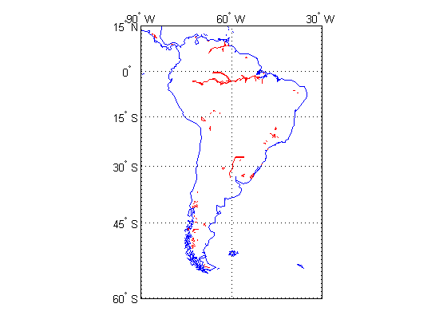
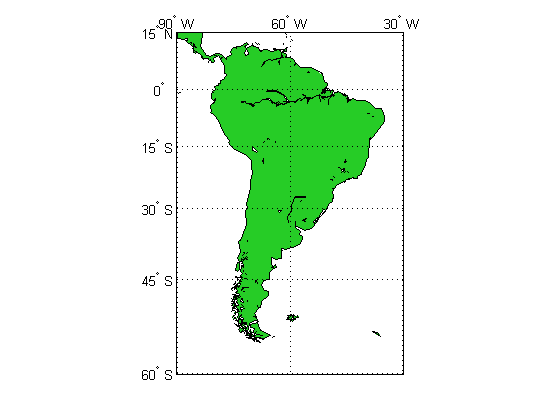

Converting Coastline Data (GSHHS) to Shapefile Format
The Global Self-consistent Hierarchical High-resolution Shorelines (GSHHS) data set, by Paul Wessel and Walter H. F. Smith, provides a consistent set of hierarchically arranged closed polygons. They can be used to construct base maps, or in applications or analyses that involve things like geographic searches or the statistical properties of coastlines.
This demo illustrates how to:
- Extract a subset of coastline data from the Global Self-consistent Hierarchical High-resolution Shorelines (GSHHS) data set
- Manipulate polygon features to add lakes and other interior water bodies as inner polygon rings ("holes")
- Save the modified data set to a shapefile for future use in MATLAB®, or for export to a geographic information system
Contents
- Step 1: Define a Working Directory
- Step 2: GNU® Unzip and Index the Coarse-Resolution GSHHS Layer
- Step 3: Import the GSHHS Data for South America
- Step 4: Examine the Data Set
- Step 5: Extract the Top Two Levels into Separate Geostruct Arrays
- Step 6: Merge Level 2 Polygons into Level 1
- Step 7: Save Results in a Shapefile
- Step 8: Validate the Shapefile
- Reference
- Additional Data
- Credits
Step 1: Define a Working Directory
This demo creates several temporary files and uses the variable workingDirectory to denote their location. The value used here is determined by the output of the tempdir command, but you could easily customize this.
workingDirectory = tempdir;
Step 2: GNU® Unzip and Index the Coarse-Resolution GSHHS Layer
GSHHS is available in wide range of spatial resolutions. This demo uses the lowest-resolution data, from the binary file gshhs_c.b. A GNU zipped copy of this file is included in the Mapping Toolbox™ demo directory, on the MATLAB path.
Use the MATLAB gunzip function to decompress gshhs_c.b.gz and create the file gshhs_c.b in the location indicated by workingDirectory. Then create an index file, gshhs_c.i, in the same directory. In general, having an index file helps to accelerate later calls to the gshhs function. Note that when you use the 'createindex' option, gshhs does not extract data.
files = gunzip('gshhs_c.b.gz', workingDirectory); filename = files{1}; indexfile = gshhs(filename, 'createindex');
Step 3: Import the GSHHS Data for South America
Select data for a specific latitude-longitude quadrangle and import it as a Mapping Toolbox "geostruct" array:
latlim = [-60 15]; lonlim = [-90 -30]; S = gshhs(filename, latlim, lonlim);
If you have finished extracting data, you can remove the decompressed GSHHS file and the index file.
delete(filename) delete(indexfile)
Step 4: Examine the Data Set
Examine the first element of the geostruct array S. In addition to the Lat and Lon coordinate arrays, note the various attribute fields that are present.
S(1)
ans =
Geometry: 'Polygon'
BoundingBox: [2x2 double]
Lat: [1x972 double]
Lon: [1x972 double]
South: -53.9004
North: 71.9942
West: 191.8947
East: 325.2054
Area: 3.7652e+007
Level: 1
LevelString: 'land'
NumPoints: 971
FormatVersion: 3
Source: 'WVS'
CrossGreenwich: 0
GSHHS_ID: 1
GSHHS comprises four levels of shorelines:
- Level 1 - "Land"
- Level 2 - "Lake"
- Level 3 - "Island in lake"
- Level 4 - "Pond in island in lake"
Check to see which levels the data you've imported includes. The Level field contains numerical level numbers.
levels = [S.Level]; unique(levels)
ans =
1 2 3
The LevelString field provides their interpretation. For example,
S(104).LevelString
ans = lake
shows that feature 104 is a lake (a Level 2 feature).
In this example, due either to the low resolution or to spatial subsetting, no Level 4 features are present.
Step 5: Extract the Top Two Levels into Separate Geostruct Arrays
This demo manipulates the top two levels of the GSHHS hierarchy, inserting each "lake" into the surrounding land mass.
Extract GSHHS Level 1 (exterior coastlines of continents and oceanic islands):
L1 = S(levels == 1);
Extract Level 2 (coastlines of lakes and seas within Level 1 polygons):
L2 = S(levels == 2);
To see their spatial relationships, you can map Level 1 edges as blue lines and Level 2 edges as red lines:
figure axesm('mercator', 'MapLatLimit', latlim, 'MapLonLimit', lonlim) gridm; mlabel; plabel geoshow([L1.Lat], [L1.Lon], 'Color', 'blue') geoshow([L2.Lat], [L2.Lon], 'Color', 'red') tightmap
Step 6: Merge Level 2 Polygons into Level 1
Define an anonymous predicate function to detect bounding-box intersections (returning true if a pair of bounding boxes intersect and false otherwise). Inputs A and B are 2-by-2 bounding-box matrices of the form
[min(lon) min(lat) max(lon) max(lat)].
boxesIntersect = ...
@(A,B) (~(any(A(2,:) < B(1,:)) || any(B(2,:) < A(1,:))));
For convenience in looping over them, copy the Level 1 bounding boxes to a 3-D array:
L1boxes = reshape([L1.BoundingBox],[2 2 numel(L1)]);
Check each Level 1 - Level 2 pair of features for possible intersection. See if polybool returns any output or not, but avoid calling polybool unless a bounding box intersection is detected first:
for k = 1:numel(L2) for j = 1:numel(L1) % See if bounding boxes intersect if boxesIntersect(L2(k).BoundingBox, L1boxes(:,:,j)) % See if actual features intersect if ~isempty(polybool('intersection', ... L2(k).Lon, L2(k).Lat, L1(j).Lon, L1(j).Lat)) % Reverse level 2 vertex order before merge to % correctly orient inner rings L1(j).Lon = [L1(j).Lon fliplr(L2(k).Lon) NaN]; L1(j).Lat = [L1(j).Lat fliplr(L2(k).Lat) NaN]; end end end end
Step 7: Save Results in a Shapefile
With a single call to shapewrite, you can create a trio of files,
gshhs_c_SouthAmerica.shp gshhs_c_SouthAmerica.shx gshhs_c_SouthAmerica.dbf
in your working directory.
shapepath = fullfile(workingDirectory,'gshhs_c_SouthAmerica');
shapewrite(L1, shapepath)
Step 8: Validate the Shapefile
To validate the results of shapewrite, read the new shapefile into the geostruct array southAmerica:
southAmerica = shaperead(shapepath, 'UseGeoCoords', true)
southAmerica =
79x1 struct array with fields:
Geometry
BoundingBox
Lon
Lat
South
North
West
East
Area
Level
LevelString
NumPoints
FormatVersi
Source
CrossGreenw
GSHHS_ID
Note that the two longest fieldnames, 'FormatVersion' and 'CrossGreenwich', have been truncated to 11 characters. This happened during the call to shapewrite and is unavoidable because of a rigid 11-character limit in the xBASE tables (.DBF format) used to store attributes in shapefiles. (In general, when writing shapefiles you may want to re-define fieldnames longer than 11 characters in order to avoid or control the effects of automatic truncation.)
Optionally, remove the new shapefiles from your working directory. (This demo needs to clean up after itself; in a real application you would probably want to omit this step.)
delete([shapepath '.*'])
Display the geostruct imported from the new shapefile. Note the various "holes" in the South America polygon indicating lakes and shorelines of other extended bodies of water in the interior of the continent.
figure('Renderer','zbuffer') ax = axesm('mercator', 'MapLatLimit', latlim, 'MapLonLimit', lonlim); set(ax, 'Color', 'cyan') gridm; mlabel; plabel geoshow(southAmerica, 'FaceColor', [0.15 0.8 0.15]) tightmap
Reference
Wessel, P., and W. H. F. Smith, 1996, A global self-consistent, hierarchical, high-resolution shoreline database, Journal of Geophysical Research, Vol. 101, pp. 8741-8743.
Additional Data
The complete GSHHS data set may be downloaded from the U.S. National Oceanic and Atmospheric Administration (NOAA) web site. Follow the links from
http://www.mathworks.com/support/tech-notes/2100/2101.html#gshhs
Credits
The GSHHS data file is provided in the Mapping Toolbox courtesy of Dr. Paul Wessel of the University of Hawaii and Dr. Walter H. F. Smith of NOAA.
For more information, run:
>> type gshhs_c.txt